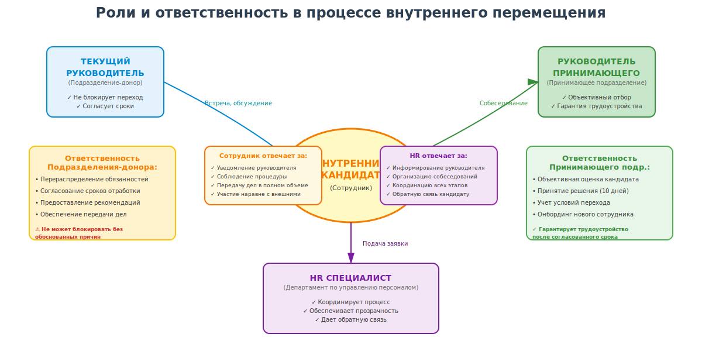
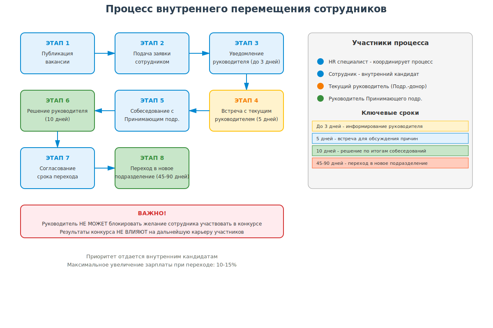

Руководство по внутренним перемещениям сотрудников
АО «Р7»
Основные понятия
Компания – АО «Р7»
Внутренний кандидат – действующий сотрудник Компании, претендующий на занятие вакантной должности
Внутренний конкурс – конкурс, объявляемый публично для внутренних кандидатов
Подразделение-донор – подразделение, из которого сотрудник переходит
Принимающее подразделение – подразделение, в которое переходит сотрудник
Общие положения
Компания поддерживает профессиональное развитие сотрудников и поощряет внутренние перемещения
Основные принципы:
- 🎯 Развитие внутри компании — приоритет для карьерного роста
- 🔍 Прозрачность — единые правила для всех перемещений
- ⚖️ Баланс интересов — учет потребностей бизнеса, команды и сотрудника
- 🤝 Этичность — отсутствие внутренней конкуренции за сотрудников
Условия участия во внутреннем конкурсе
Минимальный стаж работы:
- Линейные сотрудники: не менее 1 года в текущем департаменте
- Тим лиды, административный персонал, линейные менеджеры, руководители Групп и Направлений: не менее 1 года в Компании
- Руководители Отделов/Департаментов: не менее 2-х лет в Компании
* Отступление от сроков возможно при критической потребности бизнеса по согласованию с HR
Ключевые правила
❌ ЗАПРЕЩЕНО
HR и сотрудникам Принимающего подразделения предпринимать целенаправленные действия, инициирующие переход сотрудников (направлять вакансии по почте, звонить и т.д.)
Приоритет внутренним кандидатам
Штатным сотрудникам Компании отдается приоритет в конкурсах на заполнение вакансий
Увеличение зарплаты: 10-15%
Максимальное увеличение сразу после перехода (при переходе на новую должность/грейд — согласно должности)
Процесс внутреннего перемещения
Шаг 1
Публикация вакансии
Шаг 2
Подача заявки сотрудником
Шаг 3
Уведомление руководителя
Где публикуются вакансии:
- Карьерная страница: https://r7-office.ru/vacancy
- Внутренний ТГ канал Р7.МСК (ежемесячно)
Процесс внутреннего перемещения (продолжение)
Шаг 4
Встреча с текущим руководителем (5 дней)
Шаг 5
Собеседование с Принимающим подразделением
Шаг 6
Решение руководителя (10 дней)
Шаг 7
Согласование срока перехода
Шаг 8
Переход в новое подразделение
Уведомление текущего руководителя
ВАЖНО!
Сотрудник обязан заранее уведомить своего непосредственного руководителя об участии во внутреннем конкурсе
- При подаче заявки — поставить текущего руководителя в копию
- Руководитель не может блокировать желание участвовать в конкурсе
- Если сотрудник не уведомил — HR информирует руководителя в течение 3 рабочих дней
Встреча с текущим руководителем
Встреча текущего руководителя и HR с сотрудником
Цель встречи:
- Обсуждение причин перехода
- Рассмотрение возможных альтернатив
- Сохранение интереса → переход на следующий этап
Сроки перехода в Принимающее подразделение
Максимальные сроки:
| Сотрудники Департамента Разработки | 60 дней |
| Остальные сотрудники Компании | 45 дней |
| Руководители и ключевые сотрудники всех подразделений | 90 дней |
Срок определяется коллегиально руководителем Подразделения-донора, сотрудником и руководителем Принимающего подразделения с учетом интересов Компании
Визуализация сроков перехода

Роли и ответственность
| Внутренний кандидат | Соблюдение процедуры, своевременное информирование руководителя, передача дел в полном объеме |
| Текущий руководитель | Не блокирует переход без обоснованных причин, согласует сроки, предоставляет рекомендации |
| Руководитель Принимающего подразделения | Объективный отбор, гарантия трудоустройства по истечении срока ожидания |
| HR специалист | Координация процесса, прозрачность, обратная связь кандидату |
Визуализация ролей и взаимодействия
Обратная связь и результаты
HR специалист обязан дать обратную связь
В случае непрохождения конкурса — информирование о причинах отказа на любом этапе
Важное правило:
Результаты конкурса не должны влиять на дальнейшую работу и карьерное продвижение участников, выбывших из конкурса
Исключения и спорные вопросы
Генеральный директор имеет право отклонить переход при:
- Отсутствии бизнес-потребности
- Нарушении workflow критических процессов
Спорные вопросы решаются на уровне:
HRD и топ-менеджмента
Полная схема процесса
| Этап | Действие | Срок | Участники |
| 1 | Публикация вакансии | - | HR |
| 2 | Подача заявки + уведомление руководителя | - | Сотрудник |
| 3 | Информирование руководителя (если не уведомлен) | До 3 дней | HR |
| 4 | Встреча для обсуждения причин перехода | 5 дней | Сотрудник, текущий руководитель, HR |
| 5 | Собеседование с Принимающим подразделением | - | Сотрудник, руководитель Принимающего подразделения, HR |
| 6 | Решение по итогам собеседований | 10 дней | Руководитель Принимающего подразделения |
| 7 | Согласование срока перехода | - | Все стороны + HR |
| 8 | Передача дел и переход | 45-90 дней | Сотрудник, оба руководителя, HR |
Визуализация полного процесса
Заключение
Данное Руководство является обязательным для всех сотрудников
Ответственный за исполнение:
Директор Департамента по управлению персоналом
Одобрено: [ФИО, должность]
Дата утверждения: [ДД.ММ.ГГГГ]